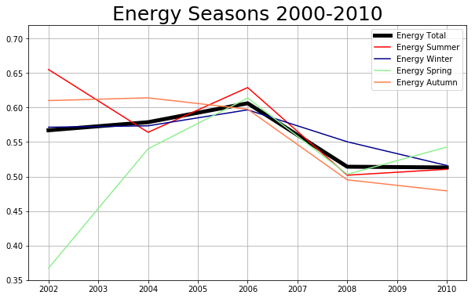
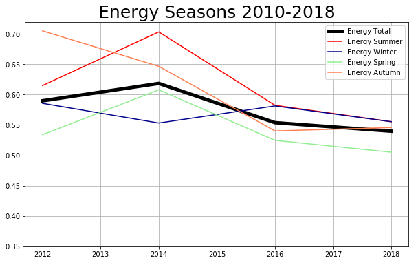
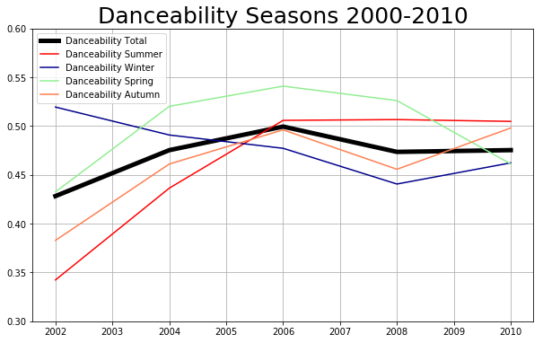
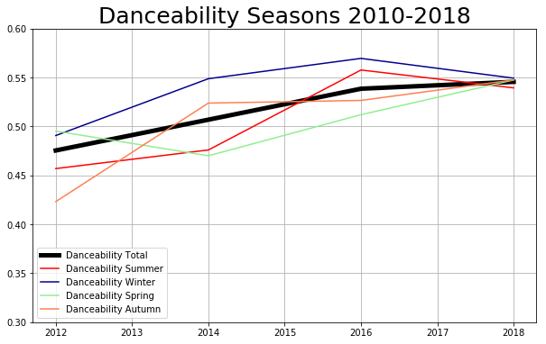
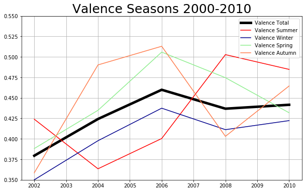
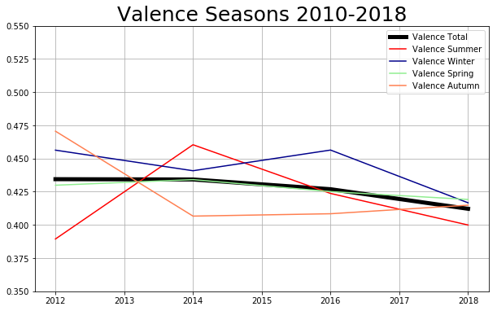

Introduction
Music is a crucial element of everyday life and human culture. People spend several hours listening to it and lots of money acquiring it. “… Whenever humans come together for any reason, music is there,” writes Daniel Levitin “….weddings, funerals, graduation from college, men marching off to war, stadium sporting events, a night on the town, prayer, a romantic dinner, mothers rocking their infants to sleep and college students studying with music as a background….”
History tells that very early man developed primitive flutes from animal bones and used stones and wood as percussion, producing the first types of music. Voice would have been the first and most natural means of expression in our distant ancestors, used to bond socially or comfort a sleepless child. It is from these humble beginnings that the music we enjoy today evolved.
Have you ever wondered how music evolved in the last years? Today with the explosion of the internet,
music Services as Apple Music, Spotify, Tidal and other apps and platforms; it has become easier to access, obtain and share music. This project aims to analyze the evolution of music since 2000's in terms of songs/genres/artists popularity and preferences, evaluate the key features of the songs, such as energy, valence, danceability and others.
We aim to show and understand which were the most popular genres in the last years, the most popular songs, the most important artists and what were the trends of the key features of those hits.
Dataset
For this purpose, we'll work with two datasets:
-
FMA: A Dataset For Music Analysis
Free Music Archive (FMA), is an open and easily accessible music dataset.
The dataset contains the information of 106,574 tracks from 16,341 artists and 14,854 albums,
arranged in a hierarchical taxonomy of 161 genres. It provides full-length and high-quality audio,
pre-computed features, together with track- and user-level metadata, tags, and free-form text such as biographies. Most useful features from user-level metadata was extracted and used in the currect analysis.
-
Spotify and LastFM API : It consists of our crawled dataset created using Spotify and LastFM API.
To complete the previous dataset and extend our analysis to the last years, information from years 2015-2018 was gathered from Spotify and LastFM API for years 2015-2018.
Both dataset were merged into a one complete dataset containing information for the time interval analyzed which comprises from year 2000 to 2018. The results and findings are summarized in the following lines.
How many songs?
Music, as all other arts, evolve over the years and dinamically change according to people's demmands. Along history, several genres emerged in different periods of time, in most of the cases influenced by the region of origin and particular events occuring at that time. The decade of the 2000s, characterized by the increasing interests in internet technologies and social media marks a very important milestone in human's history and for sure must have some impact on music evolution. Such technological evolution continues with streaming and cloud services, and portable and smart devices, which definitely impacts how people consumes music. We aim to analyze and understand such music evolution, since 2000 to 2018 in terms of quantity, people's preferences, and songs features. To visually understand the growth of music production/consumption over the years, we show the number of tracks and albums produced every year.
The production of tracks and albums has increased exponentially over the years and as expected, the production of albums is correlated with the production of tracks. . (POR QUE REDUCE DESDE AL 2014?, TALVEZ PODEMOS ENCONTRAR EL MOTIVO POR EL QUE REDUCE???) LA OTRA OPCION ES COMPLETAR CON DATOS Y MOSTRAR QUE CRECE EXPONENCIALMENTE? TALVEZ LA OPCION 1 ES MAS FACIL (INTENTAR DE BUSCAR UNA RAZON POR QUE BAJA)
In the last year (2018), we see a decrement of music production, it is due to data collection which is limited to X month.
Have you listened to it?
Song preferences and popularities change over the years. Such variations are depicted in the specified time interval, considering the top 10 songs and albums, in terms of number of listens for each track/album provided in the dataset.
Trending Genres and Artists
Overall genre preferences over the years, measured by the song's popularity:
*********************INTERACTIVE PLOT**********************
CAN WE ADD SOME TEXT FOR EACH ONE?
CAN WE ADD SOME TEXT FOR ARTIST ONE?
Relating song fetures
WE CAN INCLUDE SOME QUANTITATY ANALYSIS OF THE FEATURES
****CLUSTERING ARIELITO***
Weather may influence on type on music listened by people. Some specific features of songs such as danceability, valence and energy can help us to measure the variations of music over the year. We'll ilustrate such variations by computing the feature (danceability/energy/valence) for every season of the year. All the tracks that belong to the same season (e.g summer, winter, autumn and spring) are grouped together and the mean of their valence, energy and danceability is calculated.


In the last years, energy of the songs has increased, (tratar de encontrar una razon) and in the last 8 years, the energy of the tracks during summer is higher that the energy of the songs during winter, which again sounds very logical, since summer season has more movement of people and events such as parties or concerts.


Same analysis was performed for music danceability and its variation over the four seasons of the year. The mean of the danceability of the tracks grouped by their season of the year was calculated and we obtained the following results:
As in the case of valence, we find that danceability of songs released during winter is higher than the songs released on summer. As presented previously, danceability and valence are moderately correlated (VERIFICAR, and the results seem to be very logical. Tracks with higher danceability are released during cold seasons since most people stay indoors and consume this type of music (inventar algo mas)


What we can observe that, in most cases and specially in the last 8 years valence is higher during winter seasons compared to summer season, which leads us to conclude that music preferences/production vary according to weather variations. This makes a lot of sense, artists may produce “happier” music (higher valence) during winter seasons.
We can also see that in most of the years, the valence for autumn and spring seasons are similar, which reinforces the idea that weather relates to music production, since weather during both seasons is more or less the same.
Are genre/songs popularity related to any specific event or events occurring in the world during the last decade?
COMO TENEMOS LOS GENRE POPULARITY POR ANHOS (18 ANHOS), PODEMOS RELACIONAR CON ALGUNOS EVENTOS EN INTERNET, O SI APARECIO UNA PLATAFORMA (e.g RED SOCIAL), O EL BOOM DEL INTERNET, DE FACEBOOK, SUPONGO QUE PODEMOS ENCONTRAR ALGO.
What is the effect/impact of music streaming services on music preferences/popularity?
DE LAS ANTERIORES PREGUNTAS YA TENDRIAMOS COMO VARIAN LOS GENEROS/ARTISTAS DURANTE LOS 18 ANHOS (ANHO POR ANHO). EL BOOM DE LOS STREAMING SERVICES CREO QUE FUE 2014. LO QUE DEBERIA PASAR ES QUE SE INTERNACIONALIZE MAS EL CONSUMO DE MUSICA (e.g. SE ESCUCHE MAS MUSICA LATINA O EN ESPANHOL), PODEMOS INTENTAR ENCONTRAR EL ANHO DONDE HAY ESE CRECIMIENTO.
BOOM DE YOUTUBE TALVEZ TUVO UN EFECTO EN LA PRODUCCION DE MUSICA Y LA FORMA DE LLEGAR AL PUBLICO..PODEMOS VER ESOS ANHOS Y TRATAR DE ENCONTRAR ALGO